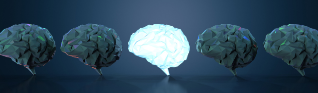

Magnetic Resonance Imaging (MRI)
Table of MRI sequences that are used in research
| Group | Sequence | Abbr. | Physics | Main clinical distinctions | Example |
|---|---|---|---|---|---|
| Spin echo | T1 weighted | T1 | Measuring spin–lattice relaxation by using a short repetition time (TR) and echo time (TE). | Lower signal for more water content, as in edema, tumor, infarction, inflammation, infection, hyperacute or chronic hemorrhage. High signal for fat. High signal for paramagnetic substances, such as MRI contrast agents. Standard foundation and comparison for other sequences. | |
| Spin echo | T2 weighted | T2 | Measuring spin–spin relaxation by using long TR and TE times. | Higher signal for more water content. Low signal for fat − Note that this only applies to standard Spin Echo (SE) sequences and not the more modern Fast Spin Echo (FSE) sequence (also referred to as Turbo Spin Echo, TSE), which is the most commonly used technique today. In FSE/TSE, fat will have a high signal. Low signal for paramagnetic substances. Standard foundation and comparison for other sequences. | |
| Spin echo | Proton density weighted | PD | Long TR (to reduce T1) and short TE (to minimize T2). | Joint disease and injury. High signal from meniscus tears. | |
| Gradient echo (GRE) | Steady-state free precession | SSFP | Maintenance of a steady, residual transverse magnetisation over successive cycles. | Creation of cardiac MRI videos. | |
| Gradient echo (GRE) | Effective T2 or "T2-star" | T2* | Spoiled gradient recalled echo (GRE) with a long echo time and small flip angle. | Low signal from hemosiderin deposits and hemorrhages. | |
| Gradient echo (GRE) | Susceptibility-weighted | SWI | Spoiled gradient recalled echo (GRE), fully flow compensated, long echo time, combines phase image with magnitude image. | Detecting small amounts of hemorrhage or calcium. | |
| Inversion recovery | Short tau inversion recovery | STIR | Fat suppression by setting an inversion time where the signal of fat is zero. | High signal in edema, such as in more severe stress fracture. | Shin splints pictured |
| Inversion recovery | Fluid-attenuated inversion recovery | FLAIR | Fluid suppression by setting an inversion time that nulls fluids. | High signal in lacunar infarction, multiple sclerosis (MS) plaques, subarachnoid haemorrhage, and meningitis. | |
| Inversion recovery | Double inversion recovery | DIR | Simultaneous suppression of cerebrospinal fluid and white matter by two inversion times. | High signal of multiple sclerosis plaques. | |
| Diffusion weighted (DWI) | Conventional | DWI | Measure of Brownian motion of water molecules. | High signal within minutes of cerebral infarction. | |
| Diffusion weighted (DWI) | Apparent diffusion coefficient | ADC | Reduced T2 weighting by taking multiple conventional DWI images with different DWI weighting, and the change corresponds to diffusion. | Low signal minutes after cerebral infarction. | |
| Diffusion weighted (DWI) | Diffusion tensor | DTI | Mainly tractography by an overall greater Brownian motion of water molecules in the directions of nerve fibers. | Evaluating white matter deformation by tumors. Reduced fractional anisotropy may indicate dementia. | |
| Perfusion weighted (PWI) | Dynamic susceptibility contrast | DSC | Measures changes over time in susceptibility-induced signal loss due to gadolinium contrast injection. | Provides measurements of blood flow. In cerebral infarction, the infarcted core and the penumbra have decreased perfusion and delayed contrast arrival. | |
| Perfusion weighted (PWI) | Arterial spin labeling | ASL | Magnetic labeling of arterial blood below the imaging slab, which subsequently enters the region of interest. It does not need gadolinium contrast. | Non-invasive method to measure cerebral blood flow. | |
| Perfusion weighted (PWI) | Dynamic contrast enhanced | DCE | Measures changes over time in the shortening of the spin–lattice relaxation (T1) induced by a gadolinium contrast bolus. | Faster Gd contrast uptake along with other features is suggestive of malignancy. | |
| Functional MRI (fMRI) | Blood-oxygen-level dependent imaging | BOLD | Changes in oxygen saturation-dependent magnetism of hemoglobin reflects tissue activity. | Localizing brain activity from performing an assigned task (e.g. talking, moving fingers) before surgery, also used in research of cognition. | |
| Magnetic resonance angiography (MRA) and venography | Time-of-flight | TOF | Blood entering the imaged area is not yet magnetically saturated, giving it a much higher signal when using short echo time and flow compensation. | Detection of aneurysm, stenosis, or dissection. | |
| Magnetic resonance angiography (MRA) and venography | Phase-contrast magnetic resonance imaging | PC-MRA | Two gradients with equal magnitude, but opposite direction, are used to encode a phase shift, which is proportional to the velocity of spins. | Detection of aneurysm, stenosis, or dissection. | |
| Magnetic resonance angiography (MRA) and venography | VIPR |